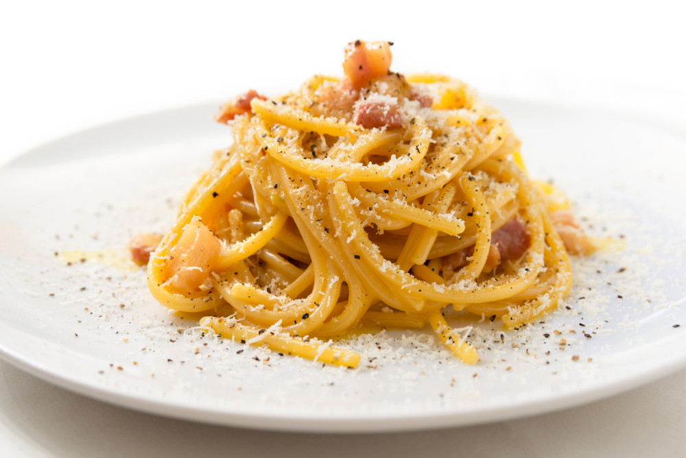

Spaghetti Carbonara

Easy Course:
Discover the magic of Spaghetti alla Carbonara, one of Rome's most iconic pasta dishes that has won hearts across the globe.
With its creamy texture and bold flavors, Carbonara is a symphony of simple, high-quality ingredients.
Just authentic Italian technique!
The origins of Carbonara are as rich as its sauce.
Born in the Eternal City, this dish is said to have been inspired by the ingenuity of Roman cooks during World War II.
Over time, it evolved into the beloved recipe we know today, served in everything from cozy trattorias to Michelin-starred restaurants.
Ingredients
- Spaghetti 0.7 lb (320 g)
- Guanciale 5 oz (150 g)
- Egg yolks 6 - average size
- Pecorino Romano PDO cheese ½ cup (50 g)
- Black pepper to taste
Steps
- Start by putting a pot of salted water on the burner to cook the pasta.
- In the meantime, remove the pork rind from the guanciale and cut it first into slices and then into strips about 1/2" (1cm) thick.
- Put the pieces into a non-stick pan and brown for about 15 minutes over medium heat.
- Meanwhile, put spaghetti in boiling water and cook for the time indicated on the package.
- Pour the yolks into a bowl, add most of the Pecorino cheese needed for the recipe and the remaining part will be used just before serving.
- Season with black pepper and whip by hand.
- Add a tablespoon of cooking water to dilute the mixture and stir.
- In the meantime the guanciale will be cooked, turn off the burner and set it aside.
- Drain the pasta al dente directly into the pan with the guanciale and stir it briefly to season it.
- Remove from heat and pour the mixture of eggs and pecorino cheese into the pan.
- Mix quickly to combine.(If necessary, you can add a little cooking water to your pasta)
- Serve spaghetti carbonara immediately with the remaining pecorino cheese and ground black pepper on top.